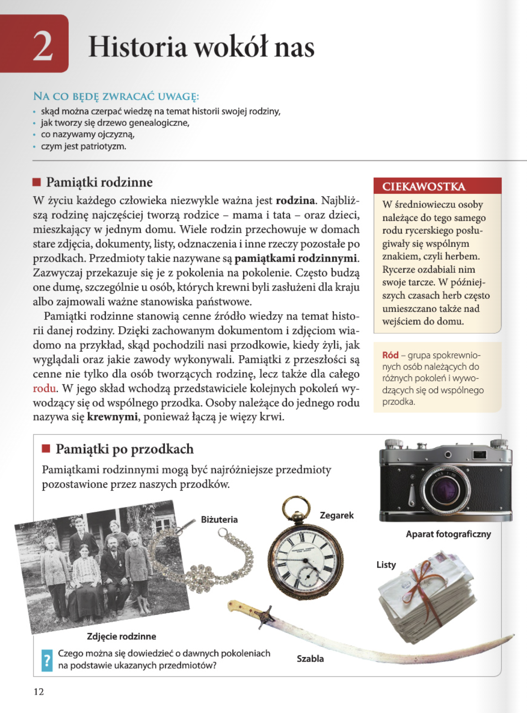
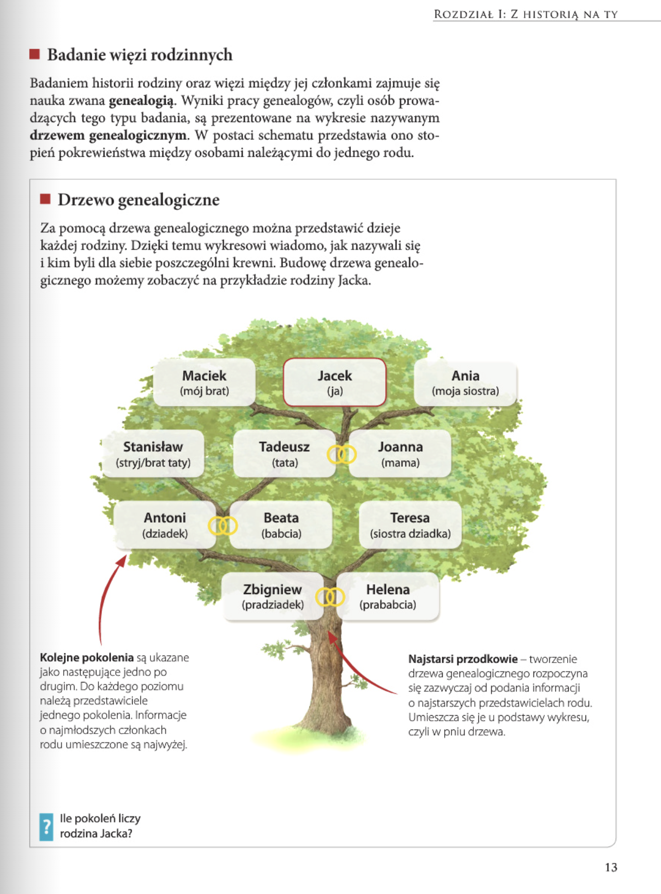
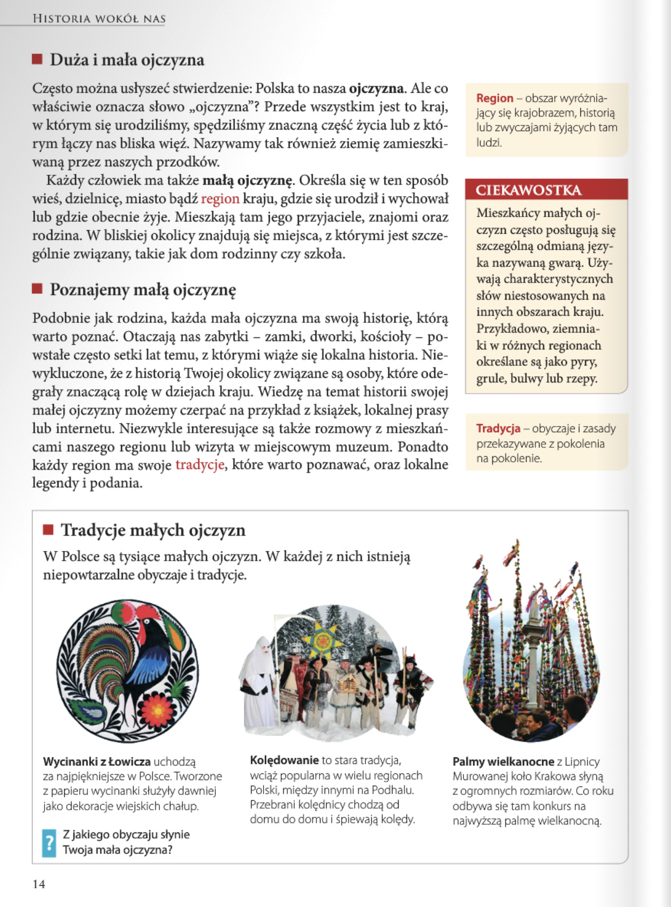
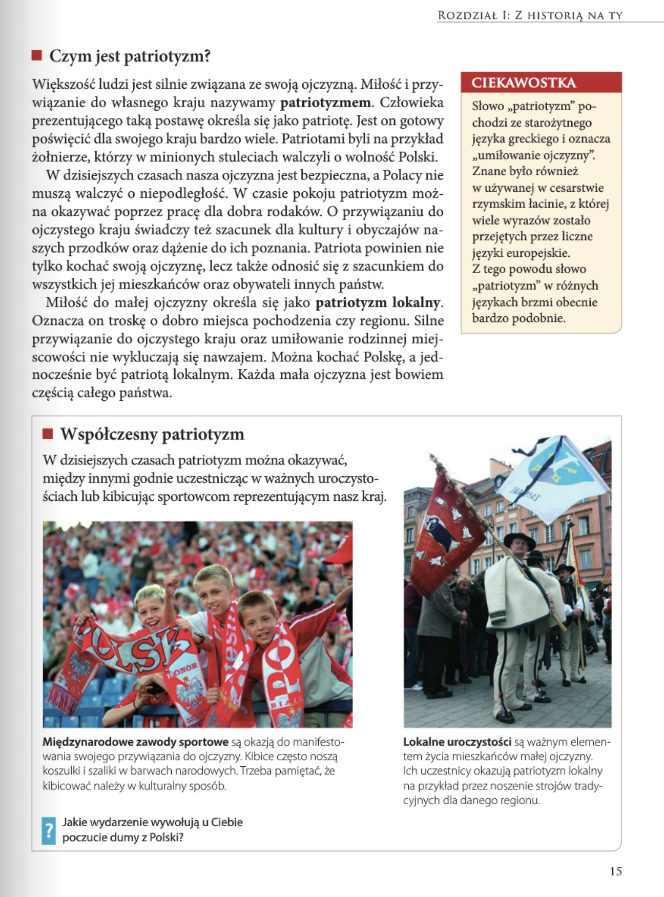
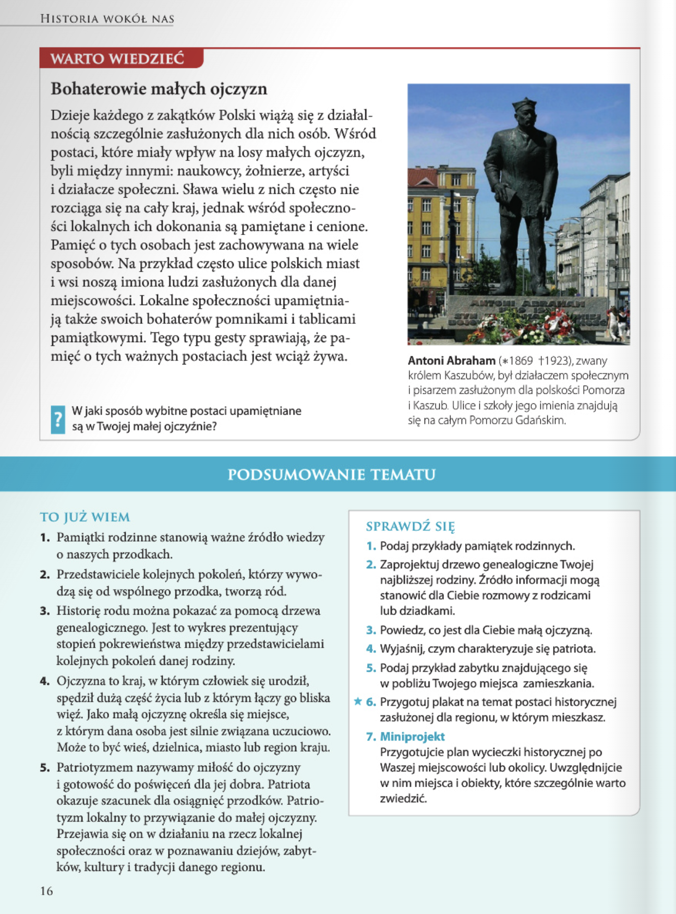

Historia
Rozdział I: Z historią na Ty
Lekcja 02. Historia wokół nas 12-16
Zagadnienia
- znaczenie pamiątek rodzinnych;
- drzewo genealogiczne – sposób przedstawienia historii rodziny;
- „wielka” i „mała” ojczyzna;
- patriotyzm jako miłość do ojczyzny;
- sposoby wyrażania patriotyzmu;
- „małe ojczyzny” i ich tradycje;
- znaczenie terminów: tradycja, drzewo genealogiczne, ojczyzna, mała ojczyzna, patriotyzm.
Historia klasa 4 - lekcja 2 - Historia wokół nas >>
strona 12
Historia wokół nas
NA CO BEDE ZWRACAC UWAGE:
- skąd można czerpać wiedzę na temat historii swojej rodziny,
- jak tworzy się drzewo genealogiczne,
- co nazywamy ojczyzną,
- czym jest patriotyzm.
Pamiatki rodzinne
W życiu każdego człowieka niezwykle ważna jest rodzina. Najbliższą rodzinę najczęściej tworzą rodzice - mama i tata - oraz dzieci, mieszkający w jednym domu. Wiele rodzin przechowuje w domach stare zdjęcia, dokumenty, listy, odznaczenia i inne rzeczy pozostałe po przodkach. Przedmioty takie nazywane są pamiatkami rodzinnymi. Zazwyczaj przekazuje się je z pokolenia na pokolenie. Często budzą one dume, szczególnie u osób, których krewni byli zasłużeni dla kraju albo zajmowali ważne stanowiska państwowe.
Pamiatki rodzinne stanowią cenne źródło wiedzy na temat historii danej rodziny. Dzięki zachowanym dokumentom i zdjęciom wiadomo na przykład, skąd pochodzili nasi przodkowie, kiedy żyli, jak wyglądali oraz jakie zawody wykonywali. Pamiątki z przeszłosci są cenne nie tylko dla osób tworzących rodzine, lecz takze dla całego rodu. W jego skład wchodzą przedstawiciele kolejnych pokoleń wywodzący się od wspólnego przodka. Osoby należące do jednego rodu nazywa się krewnymi, poniewaz łączą je więzy krwi.
CIEKAWOSTKA
W średniowieczu osoby należące do tego samego rodu rycerskiego posługiwaly się wspólnym znakiem, czyli herbem. Rycerze ozdabiali nim swoje tarcze. W późniejszych czasach herb często umieszczano także nad wejściem do domu.
Ród - grupa spokrewnionych osób należących do różnych pokoleń i wywodzacych się od wspólnego przodka.
Pytanie
Powiedz, czego możesz się dowiedzieć o dawnych pokoleniach na podstawie ukazanych przedmiotów.
Panowało silne przywiązanie do tradycji oraz wartości rodzinnych, o czym świadczyć może szabla szlachecka, stos listów oraz zdjęcie rodziny przed gospodarstwem. Biżuteria oraz zegarek są bogato zdobione, zaś aparat fotograficzny wskazuje na czasy nam bliższe.

strona 13

Badanie więzi rodzinnych
Badaniem historii rodziny oraz więzi między jej członkami zajmuje się nauka zwana genealogia. Wyniki pracy genealogów, czyli osób prowadzących tego typu badania, są prezentowane na wykresie nazywanym drzewem genealogicznym. W postaci schematu przedstawia ono stopień pokrewieństwa między osobami należącymi do jednego rodu.
Drzewo genealogiczne
Za pomocą drzewa genealogicznego można przedstawić dzieje każdej rodziny. Dzięki temu wykresowi wiadomo, jak nazywali się i kim byli dla siebie poszczególni krewni. Budowę drzewa genealogicznego możemy zobaczyć na przykładzie rodziny Jacka.
Pytanie
lle pokoleń liczy rodzina Jacka?
4 pokolenia.
strona 14
Duża i mała ojczyzna
Często można ustyszeć stwierdzenie: Polska to nasza ojczyzna. Ale co właściwie oznacza słowo „ojczyzna"? Przede wszystkim jest to kraj, w którym się urodziliśmy, spędziliśmy znaczną część życia lub z którym łączy nas bliska więż. Nazywamy tak również ziemię zamieszkiwaną przez naszych przodków.
Każdy cziowiek ma także mała ojczyznę. Określa się w ten sposób wieś, dzielnicę, miasto bądż region kraju, gdzie się urodził i wychował lub gazie obecnie żyje. Mieszkają tam jego przyjaciele, znajomi oraz rodzina. W bliskiej okolicy znajdują się miejsca, z którymi jest szczególnie związany, takie jak dom rodzinny czy szkoła.
Region - obszar wyróżniający się krajobrazem, historią lub zwyczajami żyjących tam ludzi.
Poznajemy małą ojczyznę
Podobnie jak rodzina, każda mała ojczyzna ma swoją historię, którą warto poznać. Otaczają nas zabytki - zamki, dworki, kościoły - powstałe często setki lat temu, z którymi wiąże się lokalna historia. Niewykluczone, że z historią Twojej okolicy związane są osoby, które odegrały znacząacą rolę w dziejach kraju. Wiedzę na temat historii swojej małej ojczyzny możemy czerpać na przykład z książek, lokalnej prasy lub internetu. Niezwykle interesujące są także rozmowy z mieszkańcami naszego regionu lub wizyta w miejscowym muzeum. Ponadto każdy region ma swoje tradycje, które warto poznawać, oraz lokalne legendy i podania.
Tradycja - obyczaje i zasady przekazywane z pokolenia na pokolenie.
CIEKAWOSTKA
Mieszkańcy małych ojczyzn często posługują się szczególną odmianą języka nazywaną gwarą. Używają charakterystycznych słów niestosowanych na innych obszarach kraju. Przykładowo, ziemniaki w różnych regionach określane są jako pyry, grule, bulwy lub rzepy.

strona 15

Czym jest patriotyzm?
Większość ludzi jest silnie związana ze swoją ojczyzną. Miłość i przywiązanie do własnego kraju nazywamy patriotyzmem. Człowieka prezentującego taką postawę określa się jako patriotę. Jest on gotowy poświęcić dla swojego kraju bardzo wiele. Patriotami byli na przykład żolnierze, którzy w minionych stuleciach walczyli o wolność Polski.
W dzisiejszych czasach nasza ojczyzna jest bezpieczna, a Polacy nie muszą walczyć o niepodległość. W czasie pokoju patriotyzm można okazywać poprzez pracę dla dobra rodaków. O przywiazaniu do ojczystego kraju świadczy też szacunek dla kultury i obyczajów naszych przodków oraz dążenie do ich poznania. Patriota powinien nie tylko kochać swoją ojczyznę, lecz także odnosić się z szacunkiem do wszystkich jej mieszkańców oraz obywateli innych państw.
Miłość do małej ojczyzny określa się jako patriotyzm lokalny. Oznacza on troskę o dobro miejsca pochodzenia czy regionu. Silne przywiązanie do ojczystego kraju oraz umiłowanie rodzinnej miejscowości nie wykluczają się nawzajem. Można kochać Polskę, a jednocześnie być patriotą lokalnym. Każda mała ojczyzna jest bowiem częścią całego państwa.
CIEKAWOSTKA
Słowo „patriotyzm" pochodzi ze starożytnego języka greckiego i oznacza „umiłowanie ojczyzny". Znane było również w używanej w cesarstwie rzymskim łacinie, z której wiele wyrazów zostało przejętych przez liczne języki europejskie. Z tego powodu słowo "patriotyzm" w różnych językach brzmi obecnie bardzo podobnie.
Współczesny patriotyzm
W dzisiejszych czasach patriotyzm można okazywać, między innymi godnie uczestnicząc w ważnych uroczystościach lub kibicująć sportowcom reprezentującym nasz kraj.
strona 16
WARTO WIEDZIEĆ
Bohaterowie małych ojczyzn
Dzieje każdego z zakątków Polski wiążą się z działalnością szczególnie zasłużonych dla nich osób. Wśród postaci, które miały wpływ na losy małych ojczyzn, byli między innymi: naukowcy, żołnierze, artyści i działacze społeczni. Sława wielu z nich często nie rozciąga się na cały kraj, jednak wśród społeczności lokalnych ich dokonania są pamiętane i cenione. Pamięć o tych osobach jest zachowywana na wiele sposobów. Na przykład często ulice polskich miast i wsi noszą imiona ludzi zasłużonych dla danej miejscowości. Lokalne społeczności upamiętniają także swoich bohaterów pomnikami i tablicami pamiątkowymi. Tego typu gesty sprawiają, że pamięć o tych ważnych postaciach jest wciąż żywa.
PODSUMOWANIE TEMATU
TO JUŻ WIEM
- Pamiątki rodzinne stanowią ważne żródło wiedzy o naszych przodkach.
- Przedstawiciele kolejnych pokoleń, którzy wywodzą się od wspólnego przodka, tworzą ród.
- Historię rodu można pokazać za pomocą drzewa genealogicznego. Jest to wykres prezentujący stopień pokrewieństwa między przedstawicielami kolejnych pokoleń danej rodziny.
- Ojczyzna to kraj, w którym człowiek się urodził, spędził dużą część życia lub z którym łączy go bliska więż. Jako małą ojczyznę określa się miejsce, z którym dana osoba jest silnie związana uczuciowo. Może to być wieś, dzielnica, miasto lub region kraju.
- Patriotyzmem nazywamy milość do ojczyzny i gotowość do poświęceń dla jej dobra. Patriota okazuje szacunek dla osiągnięć przodków. Patriotyzm lokalny to przywiązanie do małej ojczyzny. Przejawia się on w dzialaniu na rzecz lokalnej społeczności oraz w poznawaniu dziejów, zabytków, kultury i tradycji danego regionu.

SPRAWDŹ SIĘ
1. Podaj przyktady pamiątek rodzinnych.
2. Zaprojektuj drzewo genealogiczne Twojej najblizszej rodziny. Zródto informacji moga stanowié dla Ciebie rozmowy z rodzicami lub dziadkami.
3. Powiedz, co jest dla Ciebie mata ojczyzna.
4. Wyjasnij, czym charakteryzuje sie patriota.
5. Podaj przyktad zabytku znajdujacego sie w poblizu Twojego miejsca zamieszkania.
6. Przygotuj plakat na temat postaci historycznej zastuzonej dla regionu, w którym mieszkasz.
7. Miniprojekt Przygotujcie plan wycieczki historycznej po Waszej miejscowosci lub okolicy. Uwzglednijcie w nim miejsca i obiekty, które szczególnie warto zwiedzic.